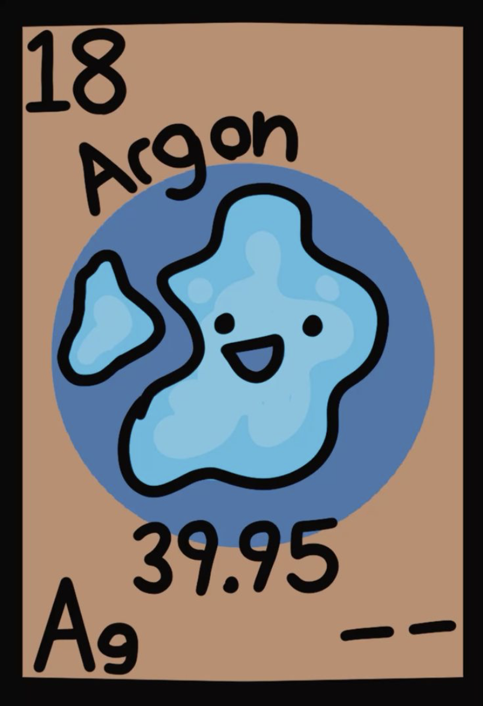
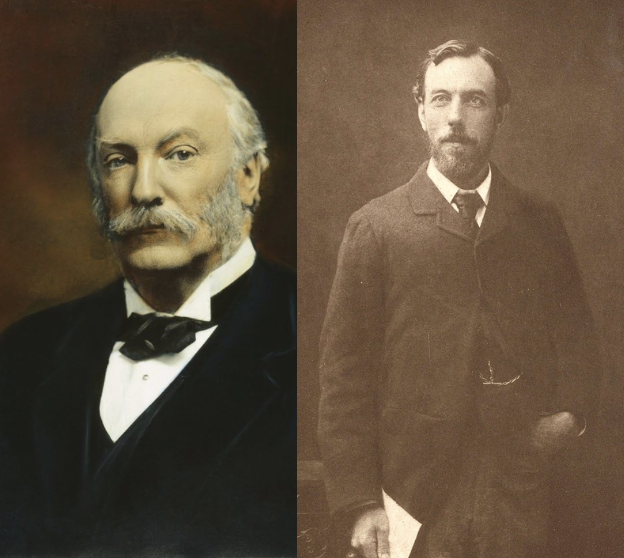

Atomic Number : 18
Atomic Mass : 39.95
Proton Number : 18
Neutron Number : 18
Category : Noble Gas
Argon was discovered in 1894 by British scientists Lord Rayleigh and William Ramsay. They discovered argon while studying the gases found in air and noticed that one gas did not react with other elements. The name argon comes from the Greek word "argos," meaning lazy or inactive, because it is very unreactive. Since then, argon has become an important gas used in lighting, welding, and scientific research.

State at room temperature: Gas Colour: Colourless Odour: Odourless Taste: Tasteless Density:1.784 g/L Melting point: −189.34°C Boiling point: −185.85°C Solubility: Slightly soluble in water Molecular form: Usually exists as single Argon atoms (Ar)
Argon is a noble gas and is extremely unreactive because it has a full outer electron shell. It does not easily form compounds with other elements. Argon does not burn and does not support combustion. It is chemically stable under normal conditions. Argon exists as individual atoms rather than molecules.
Argon is found in the Earth's atmosphere and makes up about 0.93% of air. It is the most abundant noble gas in the atmosphere. Argon is produced industrially by separating it from liquid air. It is also found in small amounts in some minerals and rocks.
Argon is commonly used in light bulbs because it prevents the hot filament from reacting with oxygen. It is used as a protective gas in welding to prevent metals from reacting with air. Argon is used in laboratories and scientific equipment because it is chemically inactive. It is also used to create a protective atmosphere when producing metals and electronics.


Argon is the third most abundant gas in Earth's atmosphere after nitrogen and oxygen. The name argon means "lazy" because it rarely reacts with other elements. Argon is a noble gas, meaning it is very stable and non-reactive. Argon was the first noble gas discovered on Earth. Argon is used in some museum displays to protect old documents and artifacts. Unlike many gases, argon exists as single atoms rather than molecules.